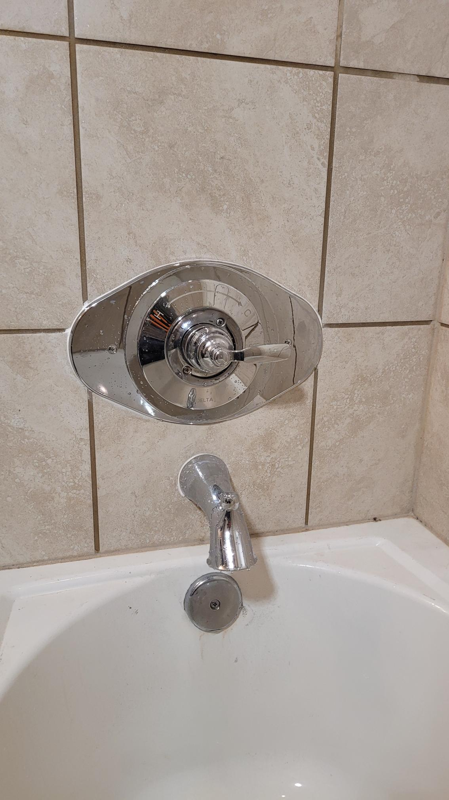
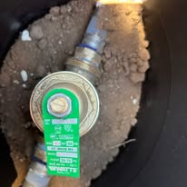

Brushy Creek is 1980s and 1990s homes, many with original plumbing, mature trees, and water heaters and valves on their second or third cycle. That is the backdrop for most plumbing repair calls in Brushy Creek: original pressure regulators and early copper or galvanized supply that is due for evaluation, fixtures worn by hard water that has been scaling these systems for thirty-plus years, and the occasional surprise behind a wall. We diagnose the actual cause, quote the fix before we start, and back the work with our warranty.

Homes on slab foundations on limestone and shallow soil do not fail the way homes with a basement do. Supply lines run under the slab or through the attic, drains run under concrete, and original pressure regulators and early copper or galvanized supply that is due for evaluation sets up the failures we see most around Cat Hollow, Brushy Creek North, and the streets around Brushy Creek Lake Park.
So we do not guess. A licensed plumber finds the real cause, whether that is a regulator, a corroded valve, a hidden leak, or a fixture at the end of its life, and explains the options in plain language, English or Spanish. You approve the exact price before any work begins.
Brushy Creek is an established Williamson County community tucked between Round Rock, Cedar Park, and Austin. Around Cat Hollow, Brushy Creek North, and the streets around Brushy Creek Lake Park, these are the calls we get most.
Our line is answered around the clock at (512) 645-1441. Tell us what is going on and we give you the next available options, often same-day.
A licensed plumber inspects the real problem and explains it plainly, English or Spanish. You see the price before any work begins. No surprises, no upsell pressure.
We do the work cleanly and to code, test it, and leave your space the way we found it. Every job is backed by our warranty.
One licensed crew for the whole house. All plumbing in Brushy Creek or plumbing repair across Greater Austin.
Clogs cleared at the source, hydro jetting, camera inspection.
Repair and install, tank and tankless. $100 off install.
Calls answered 24/7, first-available dispatch.
Trenchless repair, tunneling, camera inspection, septic pumping.
Slab, wall, and yard leaks pinpointed, then repaired.
"Eddie was honest and explained everything. I had a corroded shower faucet and he quickly diagnosed and replaced it. Money well spent to avoid a major pipe bust."
"Eddie did an amazing job installing four faucets. Thorough, friendly, and efficient from start to finish. He left everything clean and neat, and the results look fantastic."
"Eddie arrived quickly. He is extremely knowledgeable, friendly, and the prices are awesome for the quality of repairs. I'm never using another plumber."
Rooter-Man took 2nd place for Best Plumbing Service in the 2026 Best of Round Rock awards, with more than 61,000 votes cast. Thank you, Round Rock.
New to Rooter-Man of Austin? Save 5% on your first service.
Cannot be combined with any other coupon. Restrictions may apply. Valid Jan 1 through Dec 31, 2026. Call to Claim (512) 645-1441Replacing or installing a water heater? Take $100 off with Rooter-Man.
Cannot be combined with any other coupon. Restrictions may apply. Valid Jan 1 through Dec 31, 2026. Call to Claim (512) 645-1441We use non-invasive acoustic sensors and thermal imaging to pinpoint yard leaks, slab leaks, wall leaks, and fixture leaks without tearing your home apart guessing. You often get a ballpark estimate right over the phone.
Sudden pressure loss almost always points to something specific: a hidden leak, a failing pressure regulator, mineral buildup from hard water, or a main line problem. We diagnose the real cause instead of guessing, then fix it.
Yes. Original pressure regulators and early copper or galvanized supply that is due for evaluation is common here, and we evaluate whether a targeted repair solves it before anyone talks about a repipe. If a repipe is the honest answer, we lay out the pros, cons, and financing options.
It depends on the job, but we believe in transparent, upfront pricing. For many services we can give you a ballpark estimate over the phone, and you always see the price before any work begins. No upsell pressure.
Licensed, local, and family-owned since 2012. Upfront pricing, no upsell pressure, and every repair backed by our warranty. New customers save 5%.